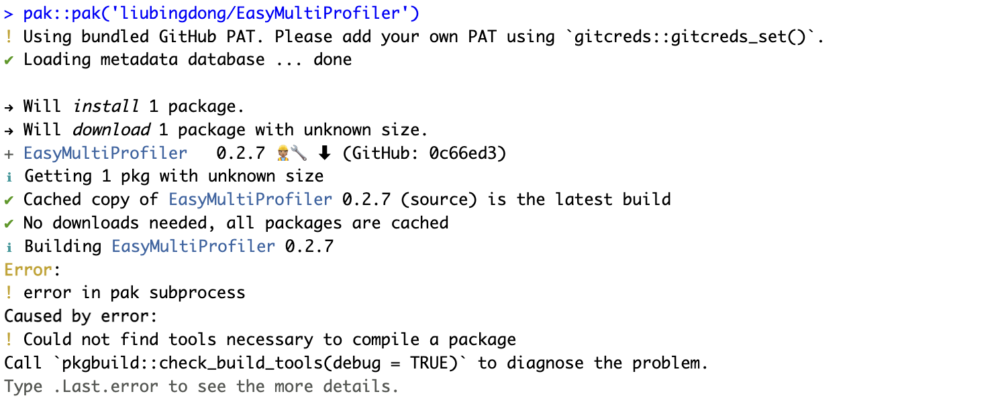
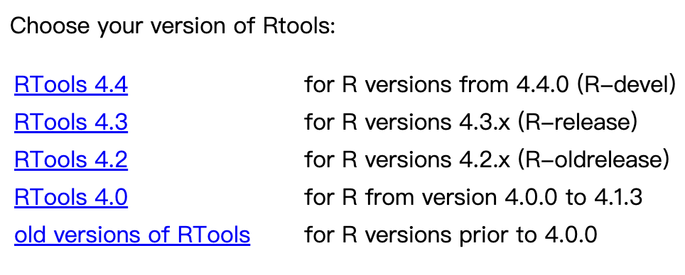
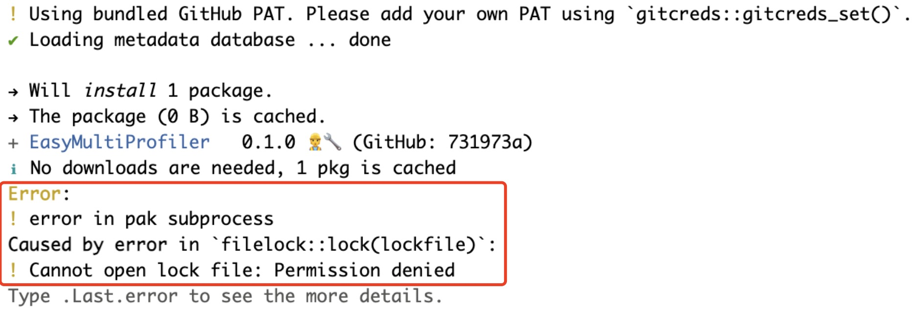
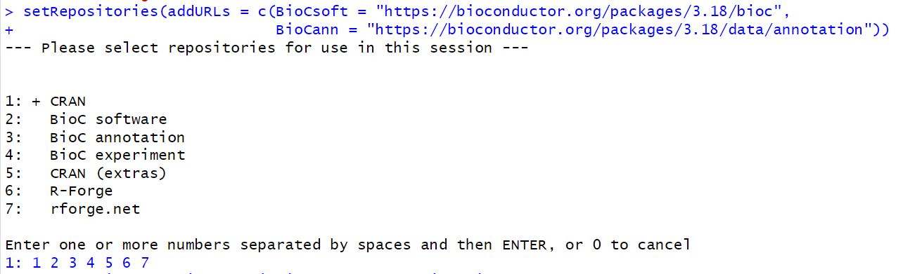
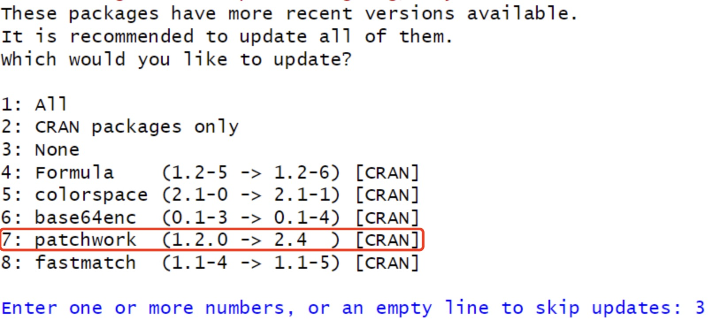

10.5 安装错误问题
EasyMultiProfiler依赖多种R包，因此在安装过程中可能会出现环境依赖冲突等问题。本章节介绍了常见的安装错误及解决办法。
10.5.1 便捷安装
if (!requireNamespace("pak", quietly=TRUE)) install.packages("pak")
if (!requireNamespace("remotes", quietly=TRUE)) install.packages("remotes")
remotes::install_version("patchwork",version='1.2.0',force = TRUE)
pak::pak("liubingdong/EasyMultiProfiler")
library(EasyMultiProfiler)
1. 安装超时错误
解决方法：
对于有些网络不稳定的地区，用户可以指定当地镜像网址来避免安装超时错误
## 例如中国大陆地区可是设置如下 local({r <- getOption("repos") r["CRAN"] <- "https://mirrors.tuna.tsinghua.edu.cn/CRAN/" options(repos=r)} ) options(BioC_mirror="https://mirrors.ustc.edu.cn/bioc/") options("download.file.method"="libcurl") options("url.method"="libcurl")
2. 常见错误 "pkgbuild::check build tools(debug = TRUE)"

windows用户解决方法：
Windows用户可能遇到"Could not find tools necessary to compile a package"无法编译的错误提示。为了解决这个问题，用户需要安装对应版本的Rtools （R4.3.X 需要RTool43, for R 4.4.X need RTool44, 以此类推， click here ~ 400MB）。安装完成后重启R和Rstudio再次尝试
pak::pkg_install("liubingdong/EasyMultiProfiler").

mac用户解决方法：
R中有很多包在安装时需要编译环境。为了确保最大的兼容性，建议新用户安装以下版本，而非最新版本的gfortran。安装后，建议重启电脑后再尝试安装EasyMultiProfiler。
下载地址：官方原始地址
3. 常见错误 "Cannot open lock file: Permission denied"

这种错误是由于安装失败导致的文件锁定，需要用户手动删除对应的缓存文件
## 苹果MAC用户
rm -rf /Library/Frameworks/R.framework/Versions/4.3-arm64/Resources/library/_cache/*
10.5.2 手动安装
# 这一步需要手动输入： 1 2 3 4 5 6 7
setRepositories(addURLs = c(BioCsoft = "https://bioconductor.org/packages/3.18/bioc",
BioCann = "https://bioconductor.org/packages/3.18/data/annotation"))
options(timeout = 600000000)
install.packages("remotes") # remotes (>= 2.5.0)
remotes::install_version("patchwork",version='1.2.0',force = TRUE) # patchwork (1.2.0)
install.packages("BiocManager") # BiocManager (>= 1.30.22)
BiocManager::install("base64enc") # base64enc (>= 0.1.3)
BiocManager::install("WGCNA") # WGCNA (>= 1.72.5)
BiocManager::install("clusterProfiler") # clusterProfiler (>= 4.10.0)
remotes::install_github("liubingdong/EasyMultiProfiler")
library(EasyMultiProfiler)
1. 安装超时错误
解决方法：
由于EasyMultiProfiler包含了提供全面工具所需的必要数据，因此其安装包大小约为20MB，这可能会导致某些网络条件较差的用户出现安装超时错误。用户可以通过调整最大连接时间来确保安装成功。
options(timeout = 600000000)
2. install_github无法找到Bioconductor 仓库
解决方法：
用户可以手动指定仓库地址
setRepositories(addURLs = c(BioCsoft = "https://bioconductor.org/packages/3.18/bioc",
BioCann = "https://bioconductor.org/packages/3.18/data/annotation"))

3. patchwork版本错误
由于patchwork包存在两个版本可能会导致enrichplot包的冲突问题，用户需要安装指定的版本。
解决方法 1:
在安装过程中，务必不要升级patchwork 1.2.0 到 2.4

解决方案 2：
如果环境中已经存在了patchwork包的冲突问题，可以手动强制降级解决问题。
remotes::install_version("patchwork",version='1.2.0',force = TRUE)
pak::pkg_install("liubingdong/EasyMultiProfiler") ## After restart R